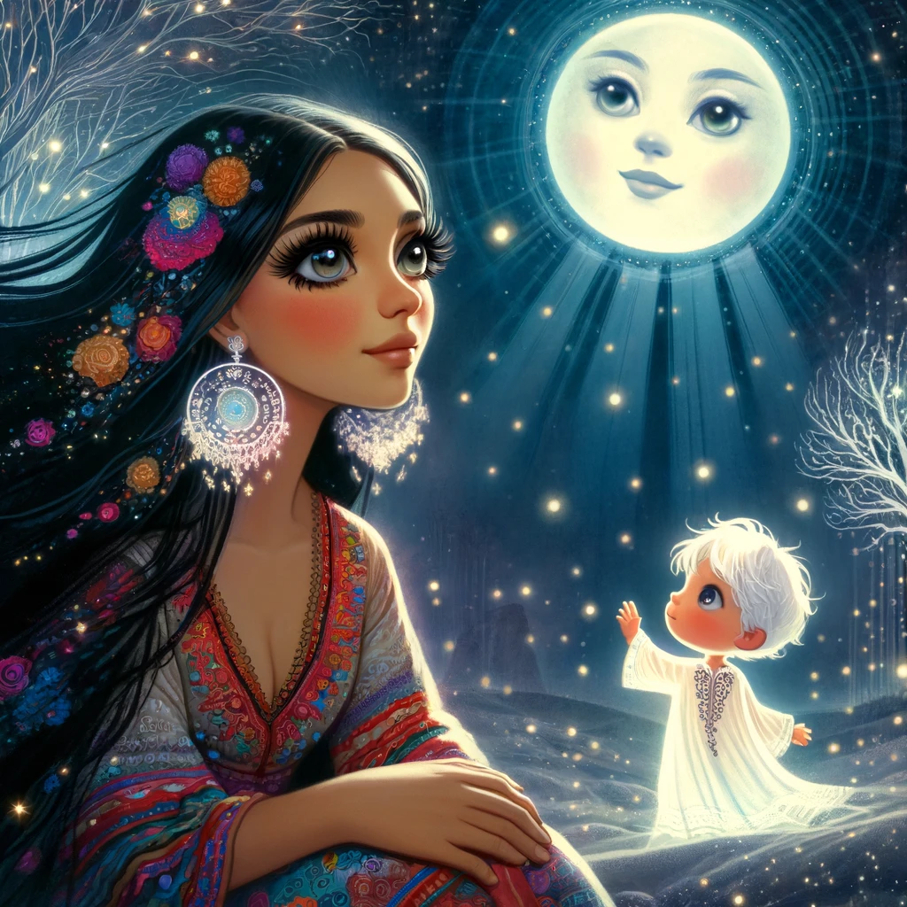

Leyenda de "Hijo de la Luna"
Una Historia de Amor y Sacrificio

En un antiguo pueblo, vivía una hermosa gitana que estaba profundamente enamorada de la luna. Su devoción era tal que cada noche, al mirar al cielo estrellado, le ofrecía canciones y plegarias, deseando que la luna le concediera un amor verdadero.
Un día, conoció a un valiente guerrero que pasaba por el pueblo. Se enamoraron perdidamente, pero el guerrero, al darse cuenta de la conexión especial que la gitana tenía con la luna, le hizo una promesa: nunca olvidaría a la luna. La gitana, temerosa de perder su amor, hizo un pacto con la luna, prometiendo que entregaría a su primer hijo a cambio del amor eterno del guerrero.
El tiempo pasó, y la gitana dio a luz a un hermoso niño, marcado por la influencia de la luna. Sin embargo, cuando el guerrero vio al niño, se llenó de ira y celos. No podía aceptar que su hijo fuera diferente. En un arranque de furia, decidió que el niño no podía vivir.
Desesperada y atormentada, la gitana trató de explicar su pacto con la luna, pero el guerrero, cegado por los celos, no la escuchó. La luna, al enterarse de la tragedia que se estaba desarrollando, decidió intervenir. Con gran tristeza, tomó al niño y lo llevó a su reino celestial, donde lo cuidó y le dio un hogar eterno.
Desde entonces, se dice que el hijo de la luna vive en el cielo, brillando con luz propia, un símbolo de amor eterno y sacrificio. La gitana, desolada por la pérdida, se convirtió en una figura mítica, cantando a la luna cada noche, recordando el amor que había perdido y el hijo que nunca podría volver.
Esta leyenda nos recuerda que el amor verdadero a menudo conlleva sacrificios, y que a veces, las decisiones más difíciles son las que marcan el rumbo de nuestras vidas. Así, el "Hijo de la Luna" se convirtió en un símbolo de amor, pérdida y esperanza, iluminando nuestras noches con su luz eterna.
Ver video
Más información
Preguntas Frecuentes